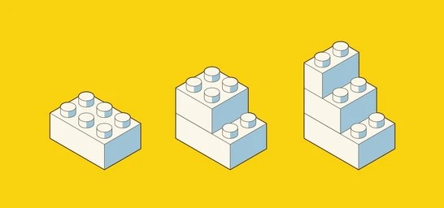
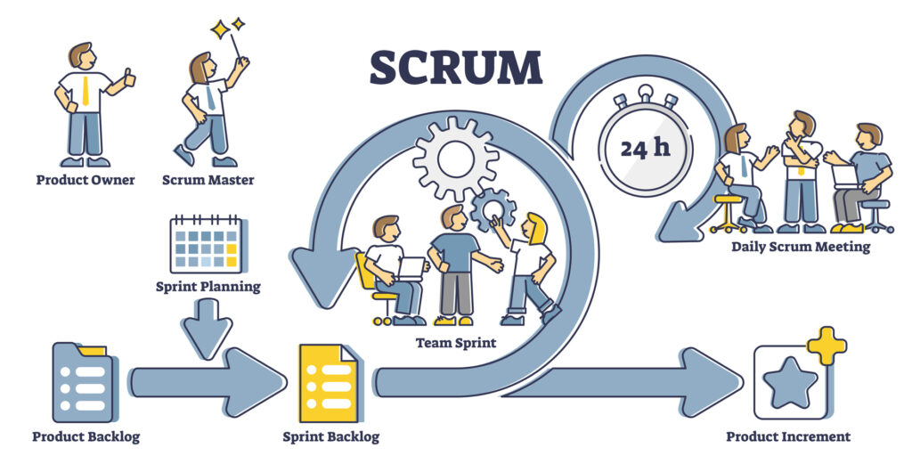
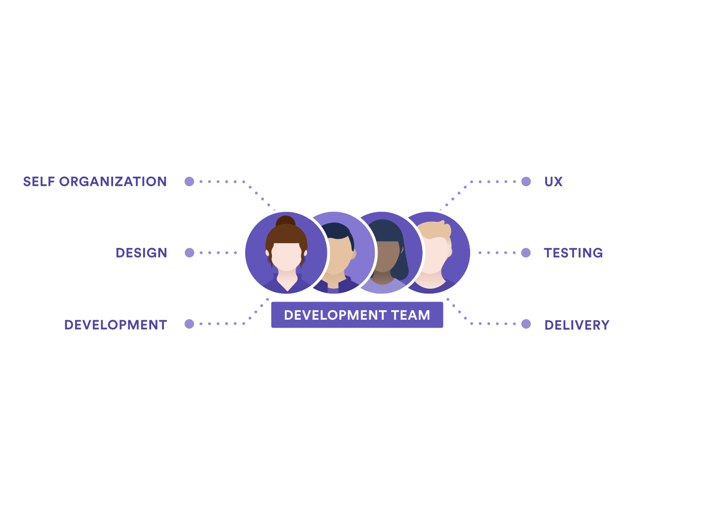
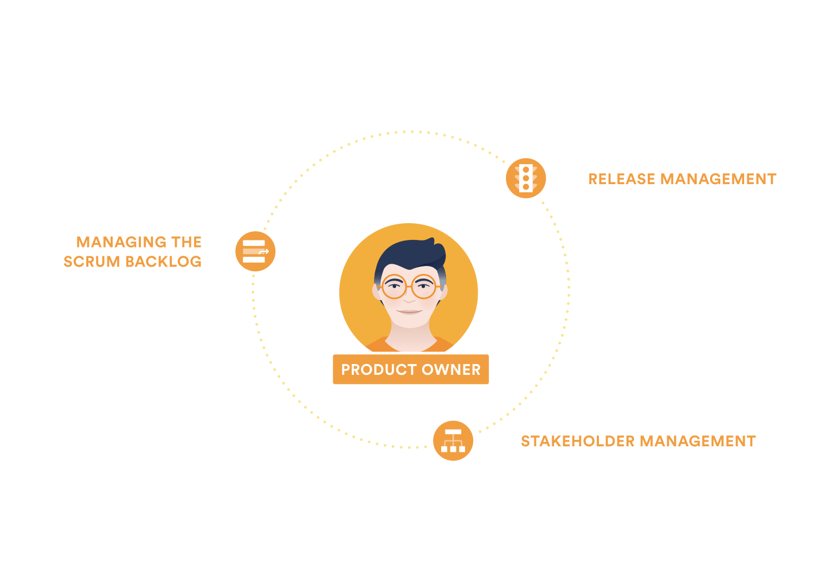
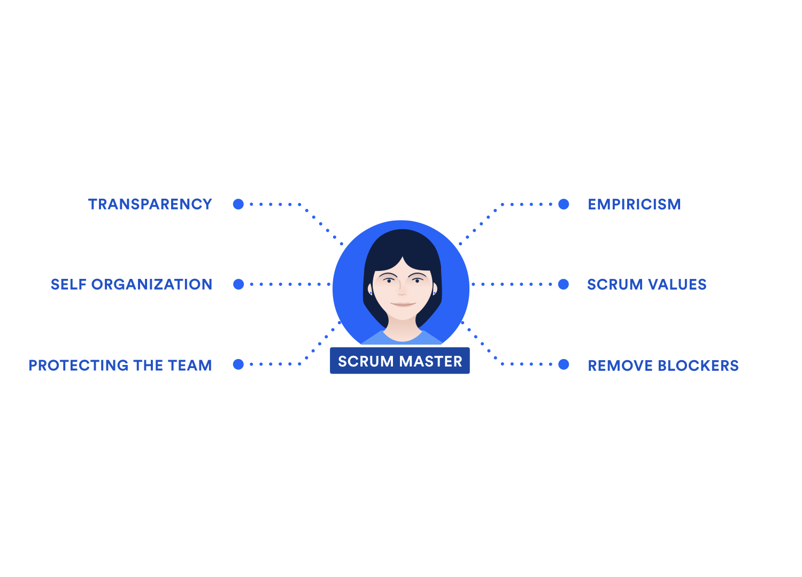
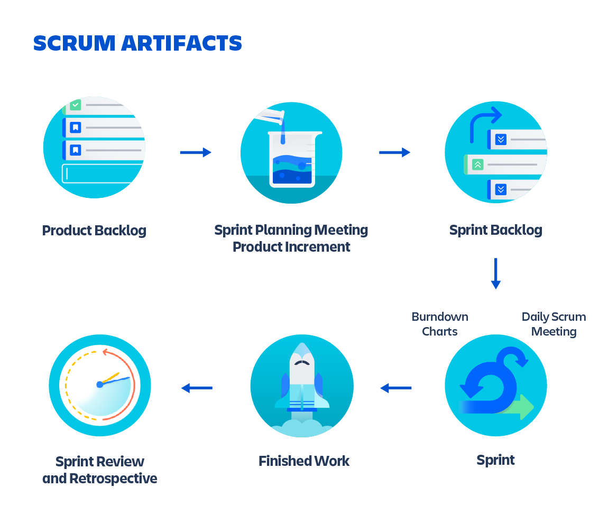
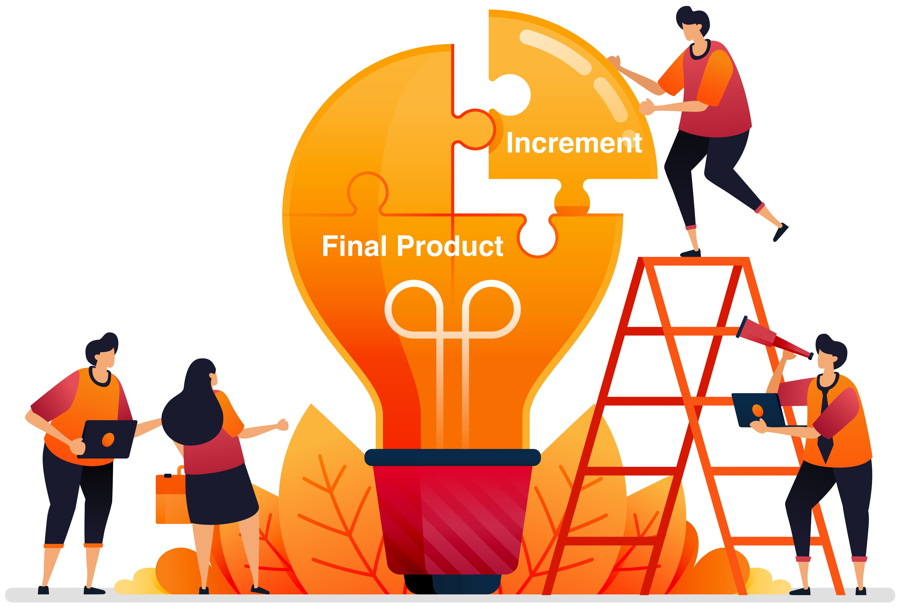
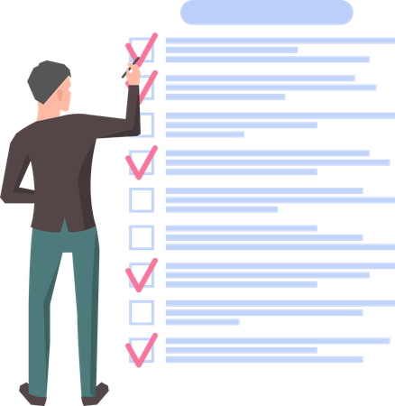

Scrum
First of all what is project management framework?
A set of tools for structuring work
Simple example
Better approach
- Friend is building a roof
- You is building a walls
- Put the roof and walls together
- Proceed to assemble the other parts
Coming to this approach
===
Purpose of project management frameworks
Agile project management framework
SCRUM
Characteristics
Flexible
Iterative approach
Improved quality of work
In plain words
Scrum-team
Development team
Product owner
Scrum-master
Development team
Product owner
Scrum-master
Artifacts (or definitions)
Artifacts
==
Terms in Scrum
Basic artifacts in Scrum
Increment
- Result of work for the sprint
- One increment always corresponds to each sprint
- Exists regardless of release
Product backlog
- Big list of tasks
- Compiled by the product owner
- Based on customer needs
- Not permanent
Sprint backlog
- Short list of tasks
- Compiled by the whole team at the start of the sprint
- Based on the product backlog
- Usually there are no major changes
Sprint
Sprint is:
- Time interval during which tasks are performed
- Lasts from one to four weeks
Standard sprint course

Caaaat!